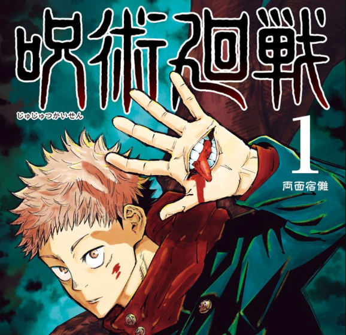

*Jujutsu Kaisen* cuenta la historia de Yuji Itadori, un estudiante de secundaria que tiene una gran fuerza física y una vida tranquila, hasta que descubre un objeto maldito que pone en riesgo a sus amigos. Para salvarlos, Yuji se ve obligado a consumir el objeto: el dedo de Ryomen Sukuna, una poderosa maldición antigua. Al hacerlo, se convierte en el anfitrión de Sukuna, lo que lo lleva a ser reclutado por la escuela de hechiceros de Tokio. Ahí, Yuji entrena junto a otros estudiantes, como Megumi Fushiguro y Nobara Kugisaki, bajo la guía del carismático y misterioso maestro Satoru Gojo. Juntos, enfrentan diversas maldiciones peligrosas que amenazan a la humanidad. En su camino, Yuji descubre más sobre el mundo de los hechiceros, las complejas reglas de las maldiciones y las oscuras motivaciones de aquellos que buscan destruir el equilibrio entre humanos y espíritus. La historia profundiza en temas de moralidad, sacrificio y la constante lucha entre el bien y el mal en un universo lleno de misticismo y acción intensa.
